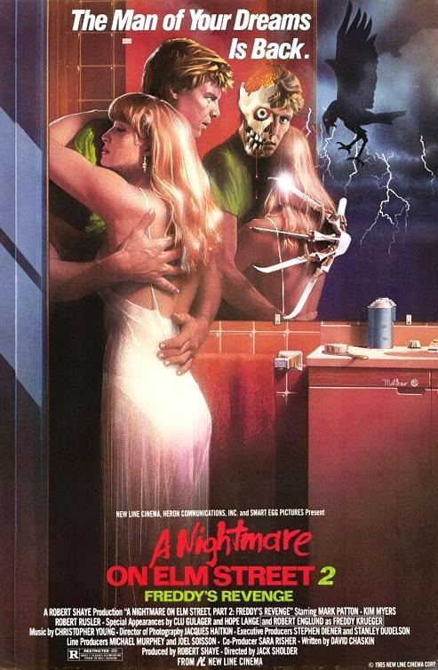
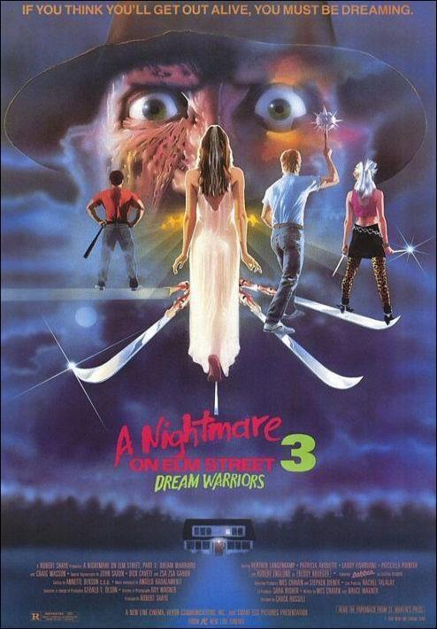
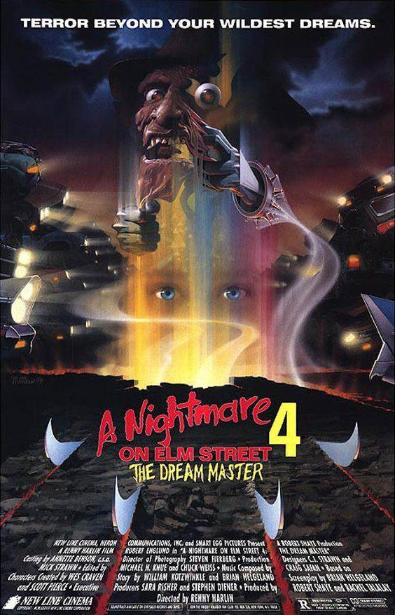
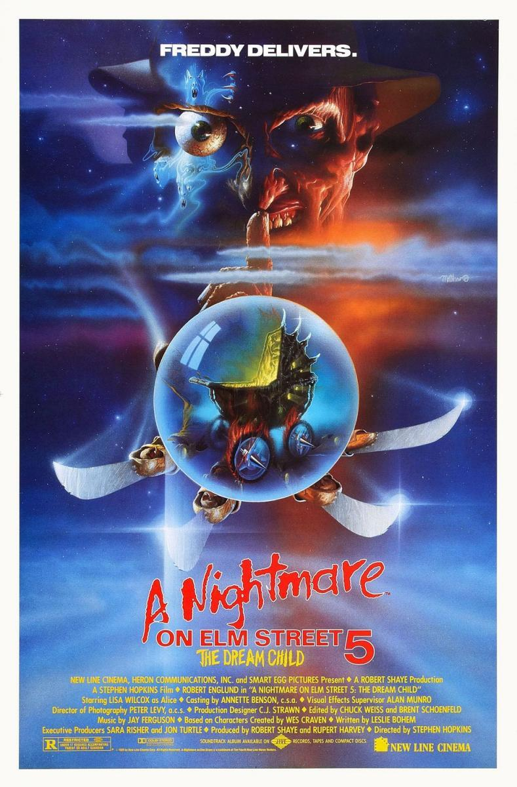
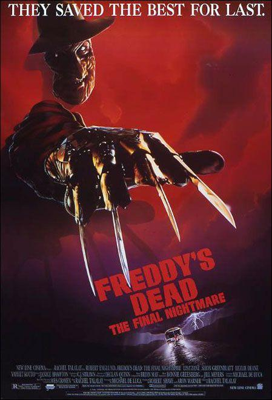
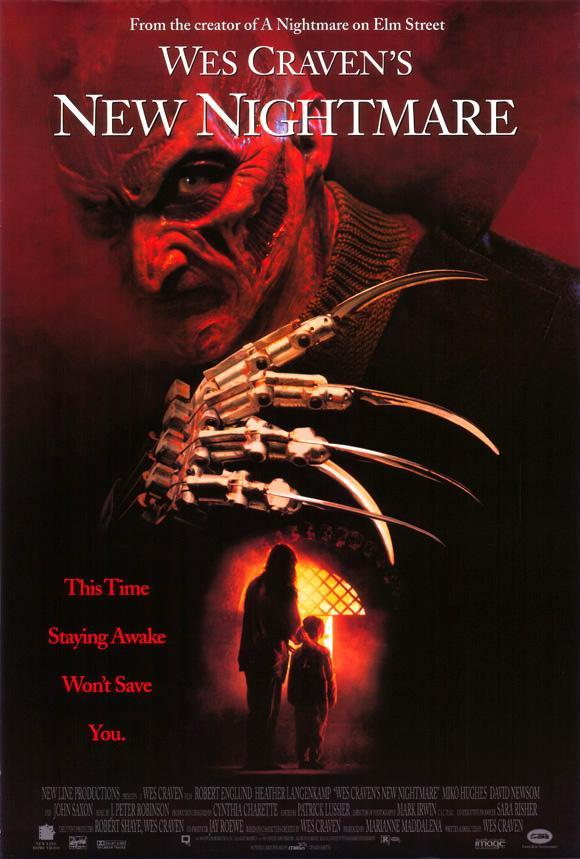
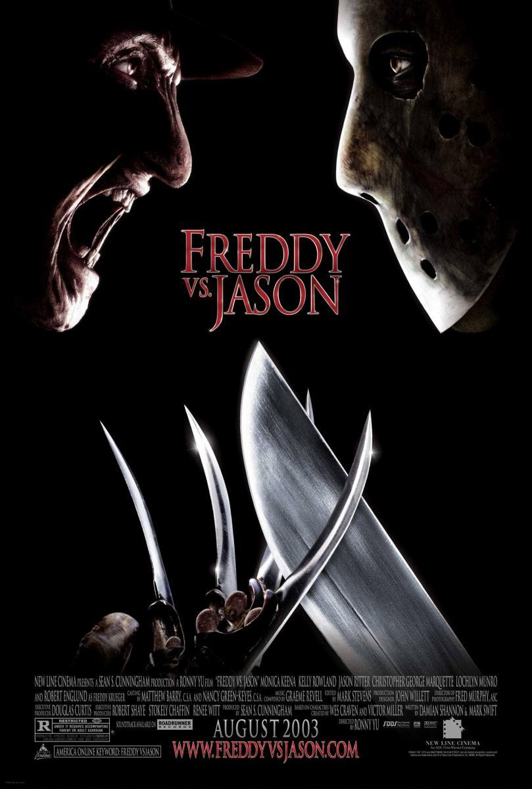
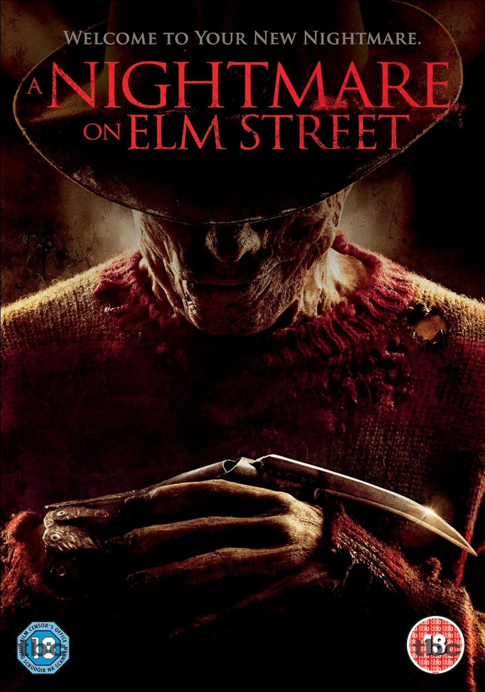

Películas
En 1984, Pesadilla en Elm Street irrumpió en los cines. La nueva película de terror del guionista y director Wes Craven llevó el género de terror a un nuevo nivel con su original concepto e introdujo uno de los monstruos más (in)famosos del cine moderno: Freddy Krueger.
Poco después de que New Line Cinema estrenara Pesadilla en Elm Street, Freddy Krueger no tardó en formar parte de la conciencia colectiva de la cultura pop. Tras sus siete exitosas secuelas, la franquicia de Pesadilla en Elm Street abarcó casi todos los medios con cómics, pósters, novelas, juguetes, colecciones de vídeo doméstico, bandas sonoras, disfraces, un programa de televisión derivado y mucho más.
New Line Cinema resucitó la serie -que finalizó en 1994 con La nueva pesadilla de Wes Craven- en 2003 con el estreno de Freddy contra Jason. La premisa de la película era unir el mundo de Freddy Krueger con otro icono del terror de los 80. Jason Voorhees: Jason Voorhees. Con esta nueva dirección, New Line Cinema aseguró el lugar de Freddy entre los mejores villanos de terror de nuestro tiempo.
En 2008, New Line Cinema se asoció con la productora Platinum Dunes para recrear el original Pesadilla en Elm Street y presentarlo a una nueva generación. Esta reimaginación fue protagonizada por Jackie Earle Haley, nominado al Oscar, en el papel de Freddy Krueger, e incorporó modernos efectos especiales para ofrecer un viaje lleno de emoción y estilo. La empresa matriz de New Line Cinema, Warner Bros, estrenó la reimaginación de Pesadilla en Elm Street en abril de 2010.
En esta sección se detallan las películas de Pesadilla en Elm Street. Puedes ver sinopsis, información sobre el reparto y el equipo, guiones, storyboards, fotos poco comunes, carteles de películas, bandas sonoras y mucho más. En estas páginas también se pueden encontrar muchas exclusivas del sitio web.
PESADILLA EN ELM STREET
Varios jóvenes de una pequeña localidad tienen habitualmente pesadillas en las que son perseguidos por un hombre deformado por el fuego y que usa un guante terminado en afiladas cuchillas. Algunos de ellos comienzan a ser asesinados mientras duermen por este ser, que resulta ser un asesino al que los padres de estos jóvenes quemaron vivo hace varios años tras descubrir que había asesinado a varios niños.

PESADILLA EN ELM STREET 2: LA VENGANZA DE FREDDY
Una familia llega a una casa en la que cinco años antes se habían cometido varios crímenes. Poco después, el hijo comienza a tener unas horribles pesadillas que lo llevan a cometer asesinatos.

PESADILLA EN ELM STREET 3: LOS GUERREROS DEL SUEÑO
Años después de los incidentes en Elm Street, Nancy se ha convertido en una psiquiatra especializada en terapia del sueño. Freddy Krueger también sigue en activo y comienza a aparecerse en los sueños de varios de sus pacientes, pero ella les otorgará las herramientas necesarias para desarrollar habilidades especiales y combatir así a Freddy.

PESADILLA EN ELM STREET 4: EL MAESTRO DE LOS SUEÑOS
Freddy Krueger vuelve a la vida después de su aparente muerte en la entrega anterior y comienza a matar a los chicos que viven en Elm Street. Sin embargo, Kristen, capaz de atraer a los demás dentro de sus sueños, le concede este poder especial a su amiga Alice, quien se da cuenta de que Freddy está sacando partido a este extraño poder.

PESADILLA EN ELM STREET 5: EL NIÑO DE LOS SUEÑOS
Freddy Krueger estaba literalmente hecho pedazos al final de "Pesadilla en Elm Street 4". Ahora vuelve a cobrar vida a través de los sueños del futuro hijo de Alice. Este ser diabólico buscará nuevas víctimas entre las incrédulas amigas del colegio de Alice, quien luchará por defender su vida y la de los suyos.

FREDDY'S DEAD: LA PESADILLA FINAL
Freddy Krueger ha conseguido finalmente matar a todos los adolescentes de su ciudad y ahora decide mudarse para conseguir nuevas presas. Para ello necesita la ayuda de su propia hija, pero esta está dispuesta a enfrentarse a él tras averiguar el origen demoníaco de los poderes de su padre.

LA NUEVA PESADILLA DE WES CRAVEN
En la última entrega de la saga de Freddy Krueger, este ser maligno que asesina introduciéndose en los sueños perseguirá a los propios actores que rodaron la película original "Pesadilla en Elm Street". La actriz Heather Lagenkamp empezará a soñar con Freddy, como ocurría en las anteriores películas, pero se da cuenta de que un demonio ha adoptado la imagen del asesino para aterrorizar a los miembros del equipo.

FREDDY CONTRA JASON
Después de diez años, Freddy Krueger decide volver a aterrorizar a la gente en sus sueños y para ello trae de nuevo a vida a Jason Voorhees. El protagonista de Viernes 13 no está dispuesto a dejarle el camino libre.

PESADILLA EN ELM STREET (2010)
Versión contemporánea de este clásico del cine de terror. Un grupo de adolescentes de los suburbios empiezan a ser perseguidos por Freddy Krueger, un asesino de aspecto terrible y con el rostro quemado que trata de acabar con ellos mientras duermen. Necesitan, pues, permanecer despiertos para protegerse mutuamente.
